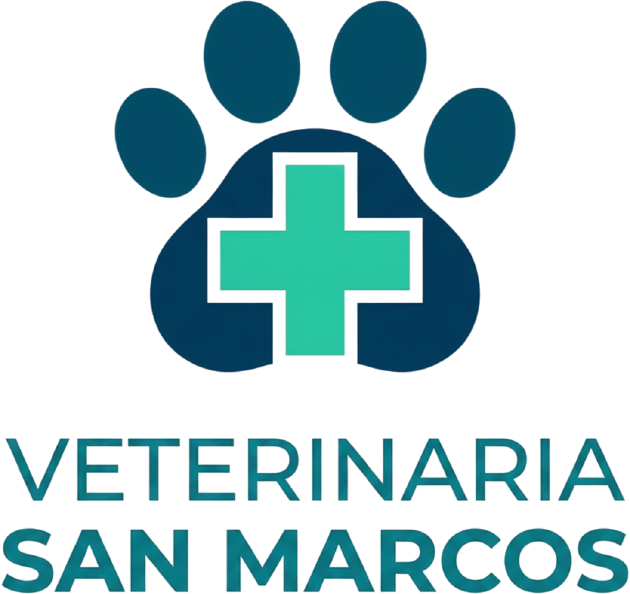
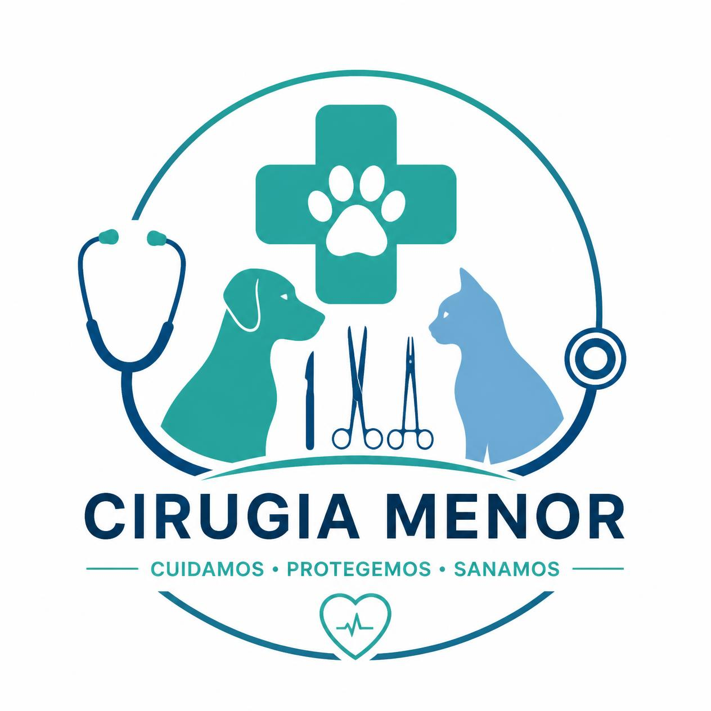
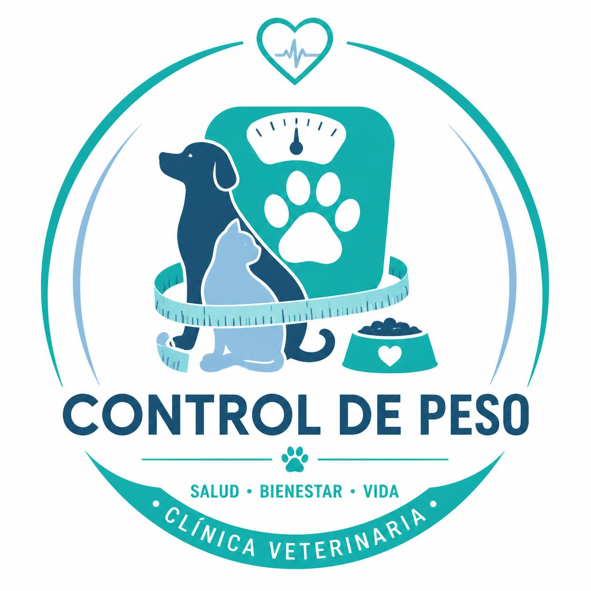
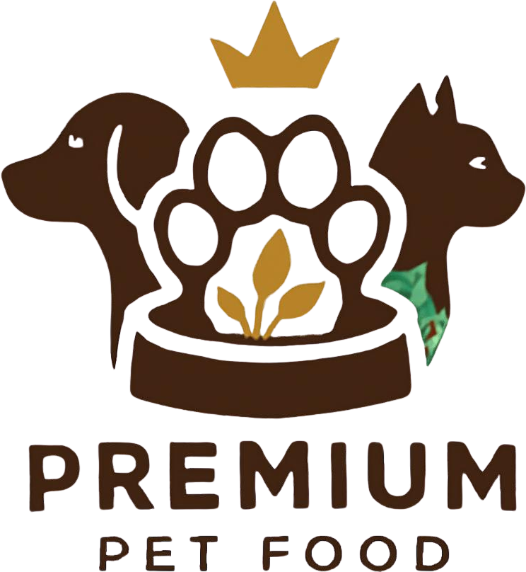
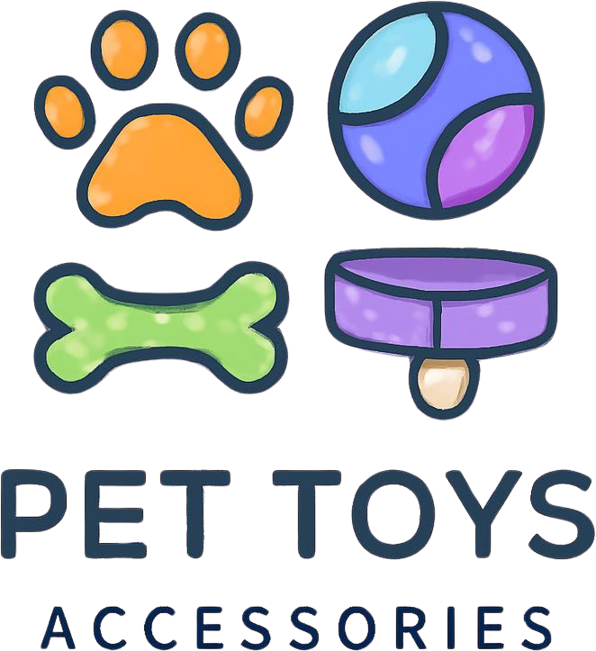

Consulta Médica General
Evaluación clínica completa para perritos y gatitos.
Cuidado profesional y amor para tus mascotas

Ofrecemos la mejor atención médica, vacunas y estética para tus mascotas en San Marcos.
¡Tu tranquilidad y la salud de tu compañero son nuestra prioridad!
Evaluación clínica completa para perritos y gatitos.
Protección contra parvovirus, rabia y profilaxis completa.

Procedimientos seguros y controlados para esterilización y atención veterinaria menor.

Plan nutricional y seguimiento para mejorar salud, movilidad y calidad de vida.

Nutrición especializada recomendada por médicos veterinarios.

Correas, collares y juguetes didácticos para el entretenimiento en casa.
Atendemos principalmente perros y gatos, además de conejos y aves.
Ofrecemos consulta general, vacunación, cirugía menor, desparasitación, control de peso, peluquería, urgencias y una variedad de productos para el cuidado de tus mascotas.